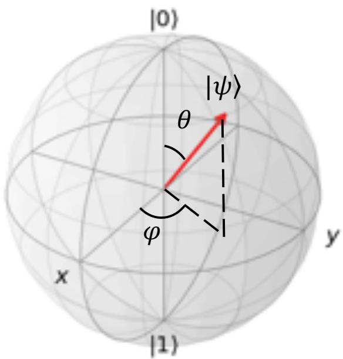

物理图像
对任意二能级系统施加一个与其能级劈裂 接近的横向驱动，逻辑态的占据会在两个态之间做周期性交换——这就是 Rabi 振荡（Rabi oscillation）。从布洛赫球上看，逻辑基态 、 居于南北极；驱动等效于绕赤道内某根轴的旋转，共振条件下旋转频率为 ， 的脉冲正好实现绕该轴 旋转，把初态从 翻到 。这一过程把”驱动强度”和”门操作长度”直接挂钩：放大微波幅度即可加快 Rabi 振荡，从而加快单比特门；这正是 电荷比特门快、自旋比特门慢的物理根源。
把脉冲序列换成”—等待—“，就得到 Ramsey 干涉；把驱动频率缓慢扫过谐振点则得到 Landau–Zener 跃迁。三者共同构成单比特相干表征的”三件套”，也是从 Rabi 振荡提取相干时间与 EDSR 强度的基础。

布洛赫球：|0⟩/|1⟩ 位于南北极，球面上任一点对应一个量子比特的纯态
理论模型：哈密顿量与旋转波近似
以自旋 或等效二能级为例。沿 方向加静磁场 ，使两逻辑态的塞曼能差为 ；再在垂直方向施加频率 、初相位 的交变磁场（或等效交变磁场），则实验室系哈密顿量为
其中 为旋磁比（硅中约 ）， 为驱动场幅度。把余弦拆成两个反向旋转的分量，与拉莫尔进动同向的分量在随自旋转动的坐标系中是常数，反向分量以 振荡——这一旋转波近似（rotating-wave approximation, RWA） 忽略反向的高频振荡，得到旋转系下的有效哈密顿量
驱动项给出绕赤道内某根轴的常旋转，旋转角频率定义为 Rabi 频率
对电荷比特，相同结构在电荷空间实现： 取双量子点反交叉处的能级差， 由门电极上交流电压幅度决定；自旋比特则在自旋空间实现同一图像，区别只在于 的物理来源——是 ESR 天线电流、EDSR 的电场-自旋转换、还是翻转模式（flopping mode）的电荷-自旋混合增强。
共振与失谐：π 脉冲、π/2 脉冲与布洛赫球
共振条件 下 中 项消失，态矢量在布洛赫球上绕 方向以 进动。对 即绕 轴
两个标志性脉冲是
分别把态矢量推到赤道和翻转到对极；任意单比特旋转都可通过调节 与 组合实现（绕 轴的旋转通过”虚拟 门”——仅改变后续脉冲的相位——实现，无需额外物理时间）。
失谐 时演化方程仍可解。把 对角化得到广义 Rabi 频率
态占据按 振荡但振幅衰减。设初态为 ，则
失谐为零时还原共振结果；失谐很大时振荡幅度被 压低——这给出谐振峰宽度与 的直接联系。扫频测到的共振峰半高宽约 ，故用啁啾脉冲或长脉冲都可快速估计退相干时间。
含弛豫与退相干的衰减振荡
实际信号必含衰减。把非相干过程分为能量弛豫 与纯退相位 ，通常把 Rabi 振荡拟合为
这里 是驱动下的退相干时间，与 Ramsey 实验的 、Hahn-echo 实验的 不一定相同；它反映驱动过程中的总相位损失，包括电荷噪声、磁场噪声与驱动幅度波动。为兼顾”门快”与”相干好”，实验上引入品质因子
越高意味着在相干时间内可完成越多的旋转循环； 通常对应平均单比特门保真度超过 99%。
参数与量级
下表汇总本站论文与外部文献中给出的 Rabi 振荡特征量级。频率与品质因子的具体值强烈依赖材料体系、驱动方式与工作点（失谐 、磁场方向 ）：
| 体系与实现 | 工作点 / 备注 | 来源 | |||
|---|---|---|---|---|---|
| Si/SiGe 双量子点电荷比特（微波驱动） | （振荡周期） | 约 9（按 计） | Eriksson 小组数据 | ||
| Si 单电子自旋比特（ESR / EDSR） | 约 13.5 | ||||
| Si 翻转模式单自旋比特 | 约 16.3 | （对称点） | |||
| Si 翻转模式单自旋比特 | 约 1.9 | （远离对称点） | |||
| Si/SiGe 一维阵列 EDSR | 最大约 | 与 相关 | 最大 | 最佳 | |
| Si-MOS 自旋比特（条形微磁体） | – | — | – | 在 90°–340° 间扫描 | |
| 应变 Ge 空穴自旋比特 | 与驱动功率呈线性，最大达百 MHz 量级 | — | — | 翻转模式 + 内禀自旋轨道耦合 | |
| 单电子自旋比特 ESR（GaAs） | 最大 ， | — | — | 经典早期实验 |
几个值得记住的量级：
- 自旋比特 ESR 的 通常在 1–10 MHz 之间，对应 约 50–500 ns；
- 电荷比特微波驱动可达数百 MHz 至数 GHz，门快但 短；
- 翻转模式（flopping mode）能在对称点把 和 同时提升约一个量级；
- 微磁体几何与磁场方向 决定 SSOC 各向异性，最佳 并不一定在常规 方向。
实验特征与测量
基本测量流程。 标定比特谐振频率 之后，把微波频率固定在 ，扫描脉冲持续时间 ，逐点测量 态的概率 ——这就是 Rabi 振荡曲线。对自旋比特，先用啁啾（chirp）脉冲或快速绝热通道粗扫谐振峰，再用单频微波精标 ；电荷比特则直接在能级反交叉处施微波。拟合上述衰减正弦即可提取 、、振幅 、相位 与基线 。
Rabi 振荡条纹与 V 形图。 把微波脉冲长度固定、扫描微波频率 ，得到条纹图：共振点处振荡幅度最大， 偏离 时频率升高、幅度衰减，整体呈”V 形”——这是诊断谐振点是否稳定的重要工具。条纹图还能直接读出 的偏移并对长期漂移做后处理校准。
功率优化与 因子曲线。 改变微波幅值 重复 Rabi 测量，可同时提取 与 ： 随 线性增加， 在低功率段受限于比特本征退相干、高功率段受限于微波加热， 在某一中间功率出现峰值——这就是最佳工作点，与单比特门保真度的最优值对应。
频率扫描测 。 用频率啁啾脉冲或长脉冲扫频测谐振峰，半高宽反推出 ，作为 Rabi 振荡前预表征。啁啾脉冲还可绕过 Landau–Zener 透射概率的限制——Landau–Zener 输运给出绝热演化概率 ，当啁啾速率 远小于 时近似绝热。
各向异性诊断。 在 Si-MOS 翻转模式比特中，把外磁场沿面内旋转 ，可观察到 、 与 的非正弦各向异性——这是微磁体合成自旋轨道耦合（SSOC）与材料本征自旋轨道耦合（ISOC）的共同签名。最佳品质因子位置往往不在 ，而是偏向一定角度——这是工程化优化单比特门的关键抓手。
不同实现路径
不同量子比特体系的 Rabi 振荡在物理图像上完全一致，但 的物理来源与可达量级差异巨大：
- 电荷比特（charge qubit）：以双量子点中电子在左/右的位置作为逻辑态，能级差 可达数百 MHz 至 GHz。微波直接驱动门电极即可获得 在 100 MHz 量级的 Rabi 振荡——门快但对电荷噪声敏感；可同时用于 光子辅助隧穿、LZSM 干涉等高频实验。
- 单自旋比特（single-spin qubit）：以电子自旋 为基态。早期通过片上 ESR 天线施加横向交变磁场，，典型 在 MHz 量级；现代实验普遍改用 EDSR，用交流电场代替天线，配合微磁体磁场梯度或内禀自旋轨道耦合把电场转换为有效交变磁场。
- 翻转模式单自旋比特（flopping mode qubit）：在双量子点对称点 处工作，载流子波函数在两量子点间高度杂化，电偶极增强使 与 同步提升约一个量级；同时获得电荷比特式的甜点（对失谐电荷噪声不敏感）。该思路也用于 共振交换比特 与 杂化比特。
- 空穴自旋比特（hole-spin qubit）：在 Ge、Si/Ge 异质结中利用内禀自旋轨道耦合做 EDSR， 可达数百 MHz；磁场方向与微磁体几何的优化可同时改善相干时间与操控保真度。理论预言硅空穴点中激发双态参与的跃迁幅度还可再高 1–4 个量级（见空穴激发态巨拉比跃迁）。
- 单三重态比特（singlet-triplet qubit）：通常用电脉冲做 调制实现 与 之间的 Landau–Zener 翻转；微波 Rabi 振荡方案也有报道，但应用较少。
- 腔驱动读出（dispersive readout）：比特与 Jaynes–Cummings 腔耦合时，连续微波可同时驱动比特 Rabi 振荡与腔透射信号，二者时间分辨的对比可分离纯退相位 与能量弛豫 。
与其他概念的关系
- Rabi 振荡 vs. Ramsey 干涉：—等待— 序列把相位演化投影为幅度振荡，提取 ；而 Rabi 直接测 与 。二者分别给出”门有多快”与”相干有多长”，共同支撑门保真度的随机基准测试。
- Rabi 振荡 vs. Landau–Zener 跃迁：连续频率扫描过反交叉点时，若通过速率满足 Landau–Zener 绝热条件则几乎完全绝热跟随，否则以一定概率停留在初态；脉冲 Rabi 振荡则近似突变驱动。Landau–Zener 概率 直接把两条路径联系起来。
- Rabi 振荡 vs. 单比特门保真度： 因子给出保真度的初步上限， 已对应 ；真正报出的保真度还需扣除 state-preparation-and-measurement（SPAM）误差与 动力学解耦 序列中的累积误差。
- Rabi 振荡 vs. 几何门：在 几何相位门 中，Rabi 振荡仍是底层驱动工具，但门末态由几何相位决定，对某些噪声（共振频率抖动）更鲁棒；二者并不互斥。
- Rabi 振荡 vs. 退相干机制： 与 电荷噪声、核自旋噪声、驱动幅度噪声都耦合，是诊断噪声谱的载体；通过测不同 下的 可把电荷噪声与纯高频去耦区分开。
- Rabi 振荡 vs. 真空 Rabi 振荡：腔量子电动力学中”原子”与腔真空场交换光子给出真空 Rabi 振荡（见 JC 模型 与 真空 Rabi 劈裂）；这里的 Rabi 振荡特指外加经典驱动下的态占据交换。二者形式相似、驱动来源不同。
参考文献
- 量子点单自旋 Rabi 振荡的首次观测：Koppens et al., Nature 442, 766 (2006)。
完整文献库（含各篇站内全文页）见 参考文献库。